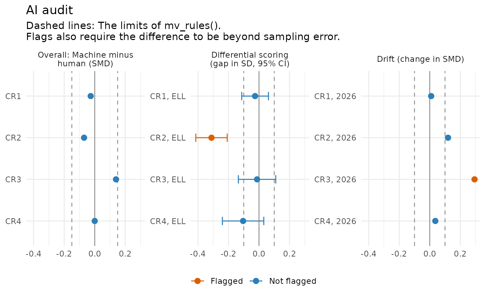

Runs the checks a psychometrician owes any AI component of a testing
program in one call, and returns flags in the same block / review /
info style as the assessment pipeline. The main use is an automated
scoring engine, checked against human scores; the results of difficulty
models and item generators can be added through components.
Usage
ai_audit(
scores = NULL,
machine = "machine",
human1 = "human1",
human2 = NULL,
group = NULL,
item = NULL,
period = NULL,
responses = NULL,
person_group = NULL,
ai_items = NULL,
model = NULL,
components = NULL,
rules = mv_rules()
)
# S3 method for class 'mv_audit'
tidy(x, ...)
# S3 method for class 'mv_audit'
autoplot(object, ...)Arguments
- scores
a data frame with one row per scored response, or
NULLwhen onlyresponsesorcomponentsare audited.- machine, human1, human2, group, item, period
names of the columns of
scoreswith the machine score, the first and second human score (NAwhen a response was not read), the test taker's group, the item and the administration or engine version. Onlymachineandhuman1are required.- responses
optional data frame of item responses, one row per test taker, as scored operationally (machine scores for AI-scored items).
- person_group
the group of each row of
responses, or the name of one of its columns.- ai_items
names of the AI-scored items in
responses. Defaults to the items inscores.- model
item types for the DIF analysis, one per item or one for all. Defaults to
"2PL"for 0/1 items and"graded"for the others.- components
optional list of results of
predict_difficulty(),calibrate_families(),agreement_report(),rater_facets()orscoring_shift().- rules
thresholds from
mv_rules().- x, object
an
mv_auditobject.- ...
not used.
Value
An object of class mv_audit: A list with checks (one row per
check: What was tested, how many targets, how many flags, and the
status), flags (one row per flag: check, target, value, rule,
level and advice), and the tables behind them: agreement,
differential, drift and dif. It has print(), tidy() (the
flags) and autoplot() methods, and is the evidence for
validity_argument().
Details
The checks, each run when its inputs are given:
Human agreement (
human2): Do two human raters agree well enough (QWK at leastqwk_min) for their scores to judge the engine? If not, the engine is checked against weak evidence.Machine agreement: Quadratic weighted kappa and standardized mean difference between machine and human scores for each item, against
mv_rules()(qwk_min,qwk_drop,score_smd), as inagreement_report().Subgroup agreement (
group): The same within each group of test takers, with the strictersubgroup_smd.Differential scoring (
group): Among responses that human raters scored the same, does the engine give one group lower scores than the reference group (the first group)? The gap is the focal group's mean machine-minus-human difference minus the reference group's, averaged over the human score levels with the focal group's weights, and divided by the SD of the human scores. It is flagged when it exceedssubgroup_smdand is more than 1.96 standard errors from 0. This is the comparison Johnson, Liu and McCaffrey (2022) recommend for telling bias in the engine from real group differences.Drift (
period): Has the engine changed between administrations or versions? Each later period's SMD and QWK are compared with the first period's; a change in SMD abovesubgroup_smdor a drop in QWK aboveqwk_dropis flagged when the change in the mean machine-human difference is also beyond sampling error (p_changebelow .05, with a Bonferroni adjustment across items and periods).DIF (
responses): A DIF analysis of the whole test as scored, withdif(). DIF on an AI-scored item (ai_items) is flagged for review, as it may come from the engine; DIF on other items is reported for information, as a matter for content review rather than the engine.Components: Results of
predict_difficulty()are checked for leaked features, results ofcalibrate_families()for families that are not isomorphic, and results ofagreement_report()for verdicts that are not met. The flags ofrater_facets()(rater severity and differential severity on the logit scale) and ofscoring_shift()(item thresholds and scores under human and machine scoring) are added as they are.
References
Johnson, M. S., Liu, X., & McCaffrey, D. F. (2022). Psychometric methods to evaluate measurement and algorithmic bias in automated scoring. Journal of Educational Measurement, 59(3), 338-361.
Williamson, D. M., Xi, X., & Breyer, F. J. (2012). A framework for evaluation and use of automated scoring. Educational Measurement: Issues and Practice, 31(1), 2-13.
See also
validity_argument() to turn the audit into a validity
argument; agreement_report(), dif().
Examples
cr <- aiscored_cr[aiscored_cr$year == 2026, ]
audit <- ai_audit(cr, human2 = "human2", group = "group", item = "item")
audit
#> AI audit: 5 checks, 7 flags (2 block, 5 review)
#> check tested flagged status
#> human agreement 4 1 REVIEW
#> machine agreement 4 1 REVIEW
#> overall bias 4 1 BLOCK
#> subgroup agreement 8 3 REVIEW
#> differential scoring 4 1 BLOCK
#>
#> Flags:
#> [BLOCK] overall bias, CR3: SMD +0.29. Machine scores are higher than
#> human scores.
#> [BLOCK] differential scoring, CR2, ELL: gap -0.23 SD, SE 0.07. For
#> responses human raters scored the same, the engine scores ELL
#> students lower than Fluent students.
#> [REVIEW] human agreement, CR4: human QWK 0.63. Human raters disagree,
#> so their scores are weak evidence about the engine. Clarify the
#> rubric and retrain raters before judging or retraining the engine.
#> [REVIEW] machine agreement, CR4: QWK 0.66, human QWK 0.63. The engine
#> agrees with people about as well as people agree with each other:
#> Fix the rubric first.
#> [REVIEW] subgroup agreement, CR3, ELL: QWK 0.68. The engine agrees
#> less well with human raters in this group.
#> [REVIEW] subgroup agreement, CR4, Fluent: QWK 0.67. The engine agrees
#> less well with human raters in this group.
#> [REVIEW] subgroup agreement, CR4, ELL: QWK 0.60. The engine agrees
#> less well with human raters in this group.
audit$differential
#> # A tibble: 4 × 6
#> item group reference n gap se
#> <chr> <chr> <chr> <int> <dbl> <dbl>
#> 1 CR1 ELL Fluent 73 -0.0540 0.0618
#> 2 CR2 ELL Fluent 73 -0.228 0.0702
#> 3 CR3 ELL Fluent 73 0.140 0.0857
#> 4 CR4 ELL Fluent 73 -0.0399 0.103
# \donttest{
# with drift across years and DIF on the test as scored
d26 <- aiscored[aiscored$year == 2026, ]
audit <- ai_audit(aiscored_cr, human2 = "human2", group = "group", item = "item",
period = "year", responses = d26[, -(1:3)],
person_group = d26$group)
audit
#> AI audit: 7 checks, 8 flags (2 block, 5 review)
#> check tested flagged status
#> human agreement 4 1 REVIEW
#> machine agreement 4 1 REVIEW
#> overall bias 4 0 ok
#> subgroup agreement 8 2 REVIEW
#> differential scoring 4 1 BLOCK
#> drift 4 1 BLOCK
#> DIF 20 2 REVIEW
#>
#> Flags:
#> [BLOCK] differential scoring, CR2, ELL: gap -0.31 SD, SE 0.05. For
#> responses human raters scored the same, the engine scores ELL
#> students lower than Fluent students.
#> [BLOCK] drift, CR3, 2026: SMD +0.29 against -0.01, QWK 0.74 against
#> 0.85. The engine's scores have changed since the first period:
#> Check what changed (engine version, prompts, population) and
#> rescore if needed.
#> [REVIEW] human agreement, CR4: human QWK 0.66. Human raters disagree,
#> so their scores are weak evidence about the engine. Clarify the
#> rubric and retrain raters before judging or retraining the engine.
#> [REVIEW] machine agreement, CR4: QWK 0.68, human QWK 0.66. The engine
#> agrees with people about as well as people agree with each other:
#> Fix the rubric first.
#> [REVIEW] subgroup agreement, CR4, Fluent: QWK 0.69. The engine agrees
#> less well with human raters in this group.
#> [REVIEW] subgroup agreement, CR4, ELL: QWK 0.63. The engine agrees
#> less well with human raters in this group.
#> [REVIEW] DIF, CR2: ESD -0.319, p < .001. DIF on an AI-scored item:
#> Compare with human scores to see whether the engine or the item
#> causes it.
#> [INFO] DIF, MC07: ESD -0.115, p < .001. DIF on an item the engine
#> does not score: A matter for content review, not for the engine.
autoplot(audit)

# }